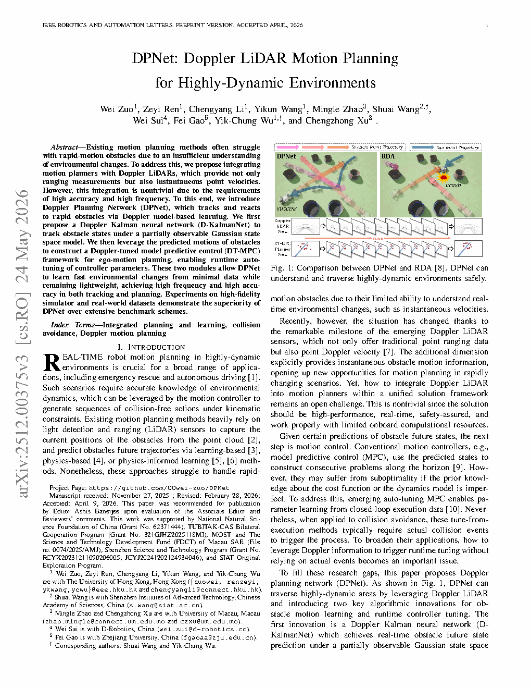
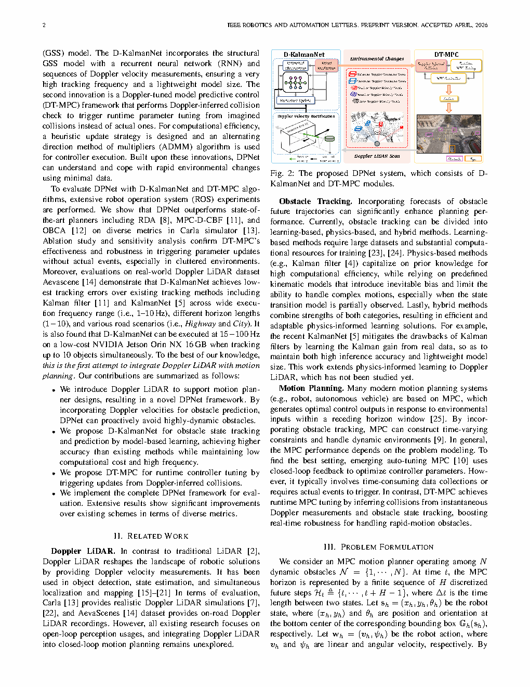
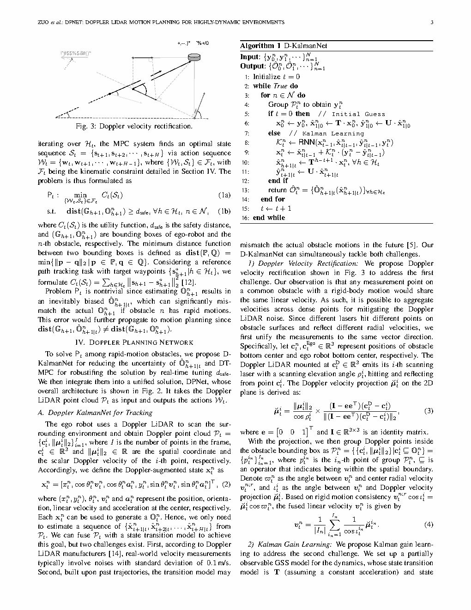
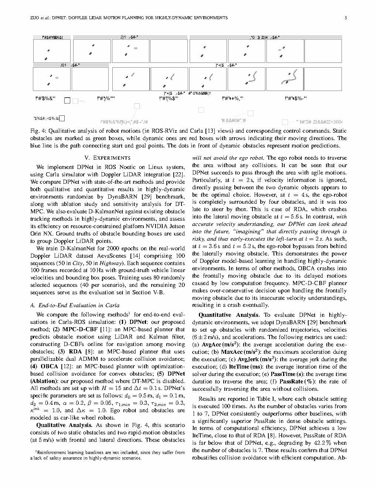

| 标题 | DPNet: Doppler LiDAR Motion Planning for Highly-Dynamic Environments（DPNet：面向高动态环境的 Doppler 激光雷达运动规划） |
| 作者 | Wei Zuo（左伟）1、Zeyi Ren（任泽毅）2、Chengyang Li（李成阳）1、Yikun Wang（王奕坤）1、Mingle Zhao（赵明乐）3、Shuai Wang（王帅）4、Wei Sui（隋伟）2、Fei Gao（高飞）5、Yik-Chung Wu（吴义忠）1、Chengzhong Xu（许成忠）1 |
| 单位 | 1. 香港大学（HKU）；2. 中国科学院深圳先进技术研究院（SIAT）；3. 澳门大学（Univ of Macau）；4. 地瓜机器人（D-Robotics）；5. 浙江大学（Zhejiang Univ） |
| 发表 | IEEE Robotics and Automation Letters (RA-L) 2026 |
| TL;DR | DPNet首次将Doppler LiDAR的径向速度测量引入运动规划——通过D-KalmanNet（物理信息RNN卡尔曼滤波器）精确跟踪快速移动障碍物，并用DT-MPC（Doppler调谐模型预测控制）根据推断的碰撞风险动态调整代价函数参数，使无人机在传统规划器失效的高动态环境中实现安全飞行。 |
| 灵感来源 | 对应的洞察 | 类型 |
|---|---|---|
| KalmanNet（Revay et al., 2022）——用RNN学习卡尔曼滤波器参数以处理非线性和模型失配 | 在KalmanNet框架中注入Doppler径向速度的物理约束——物理模型（KF结构）提供可解释性和数据效率，RNN学习补偿模型失配和非线性 | 架构/方法 |
| Doppler LiDAR的物理原理——径向速度 $v_r$ 是沿激光束方向的速度分量 | 不再用位置差分求速度，而是直接使用 $v_r$ 作为附加观测——将"速度可观测性"从一阶差分上升到零阶直接测量，从根本上改善障碍物状态估计 | 传感器/物理 |
| MPC中代价函数权重的手动调参难题——静态权重无法适应场景动态变化 | 用推断的碰撞风险动态调节MPC代价——碰撞风险高时加大安全代价、缩短时域；风险低时恢复标称参数——实现运行时自适应（runtime adaptation） | 控制/优化 |
| 神经网络用于MPC参数预测——学习从场景特征到最优MPC权重的映射 | DT-MPC的Doppler调谐——利用Doppler速度信息推断的碰撞风险作为输入特征，通过轻量网络输出MPC代价参数，实现感知到控制的直接通路 | 学习/控制 |
flowchart TB
subgraph SENSOR["传感器层 · Doppler LiDAR"]
direction LR
DOP_LIDAR["Doppler LiDAR · 点云+径向速度 · 10Hz"]
POS_CLOUD["位置点云 · (x, y, z, intensity)"]
VEL_MEAS["径向速度测量 · v_r 沿波束方向"]
end
subgraph TRACKING["障碍物跟踪层 · D-KalmanNet"]
direction LR
PREPROC["预处理 · 聚类+数据关联"]
KF_PRED["卡尔曼预测 · 物理模型先验"]
RNN_KALMAN["RNN · 学习卡尔曼增益+噪声"]
KF_UPDATE["卡尔曼更新 · 后验状态+协方差"]
OBJ_STATE["障碍物状态 · (x, y, z, v_x, v_y, v_z, P)"]
end
subgraph PLANNING["运动规划层 · DT-MPC"]
direction LR
RISK_INFER["碰撞风险推断 · ρ = v_rel / d"]
PARAM_NET["参数网络 · 代价权重+预测时域"]
MPC_SOLVER["MPC求解器 · 非线性优化"]
CMD_GEN["控制指令生成 · 推力+姿态"]
end
subgraph UAV["无人机执行层"]
PX4["PX4飞控 · 姿态控制+推力"]
end
DOP_LIDAR --> POS_CLOUD
DOP_LIDAR --> VEL_MEAS
POS_CLOUD --> PREPROC
VEL_MEAS --> PREPROC
PREPROC --> KF_PRED
VEL_MEAS --> RNN_KALMAN
KF_PRED --> RNN_KALMAN
RNN_KALMAN --> KF_UPDATE
KF_UPDATE --> OBJ_STATE
OBJ_STATE --> RISK_INFER
RISK_INFER --> PARAM_NET
PARAM_NET --> MPC_SOLVER
OBJ_STATE --> MPC_SOLVER
MPC_SOLVER --> CMD_GEN
CMD_GEN --> PX4
classDef sensor fill:#f0ebfd,stroke:#8b5cf6,stroke-width:2px,color:#6d28d9
classDef track fill:#e8f0fe,stroke:#3b82f6,stroke-width:2px,color:#1d4ed8
classDef plan fill:#fef7ed,stroke:#f59e0b,stroke-width:2px,color:#92400e
classDef exec fill:#e6f7ee,stroke:#10b981,stroke-width:2px,color:#047857
class DOP_LIDAR,POS_CLOUD,VEL_MEAS sensor
class PREPROC,KF_PRED,RNN_KALMAN,KF_UPDATE,OBJ_STATE track
class RISK_INFER,PARAM_NET,MPC_SOLVER,CMD_GEN plan
class PX4 exec
flowchart TB
subgraph RAW["原始数据层"]
direction LR
PC["点云数据 · (x,y,z,intensity) · 10Hz"]
DOP["Doppler速度 · v_r per point · 10Hz"]
IMU_OUT["IMU · 加速度+角速度 · 200Hz"]
ODOM["里程计 · 自车6-DoF位姿 · 100Hz"]
end
subgraph PROC["数据处理层"]
direction LR
CLUSTER["点云聚类 · 欧氏聚类+DBSCAN"]
ASSOC["数据关联 · 匈牙利匹配+卡尔曼门"]
TRANS["坐标变换 · LiDAR→世界坐标系"]
end
subgraph EST["状态估计层 · D-KalmanNet"]
direction LR
FEAT["特征提取 · (位置残差, 速度残差, Doppler残差, 波束方向)"]
H_RNN["隐藏状态RNN · GRU单元"]
KGAIN["输出: 卡尔曼增益K_k"]
QNOISE["输出: 过程噪声Q_k"]
STATE_POST["后验状态 · 位置+速度+协方差"]
end
subgraph CTRL["控制规划层 · DT-MPC"]
direction LR
COL_RISK["碰撞风险计算 · ρ_k"]
PARAM_PRED["参数预测 · (γ_coll, γ_smooth, N_horizon)"]
COST_CONS["代价构建 · 避碰约束+平滑约束"]
SOLVE["QP/NLP求解 · 最优控制序列"]
CMD["控制指令 · 推力T + 姿态q_des"]
end
PC --> CLUSTER
DOP --> CLUSTER
CLUSTER --> ASSOC
ODOM --> TRANS
ASSOC --> TRANS
TRANS --> FEAT
DOP --> FEAT
FEAT --> H_RNN
H_RNN --> KGAIN
H_RNN --> QNOISE
KGAIN --> STATE_POST
QNOISE --> STATE_POST
TRANS --> STATE_POST
STATE_POST --> COL_RISK
COL_RISK --> PARAM_PRED
PARAM_PRED --> COST_CONS
COST_CONS --> SOLVE
STATE_POST --> COST_CONS
SOLVE --> CMD
classDef raw fill:#f0ebfd,stroke:#8b5cf6,stroke-width:2px,color:#6d28d9
classDef proc fill:#e8f0fe,stroke:#3b82f6,stroke-width:2px,color:#1d4ed8
classDef est fill:#fef7ed,stroke:#f59e0b,stroke-width:2px,color:#92400e
classDef ctrl fill:#e6f7ee,stroke:#10b981,stroke-width:2px,color:#047857
class PC,DOP,IMU_OUT,ODOM raw
class CLUSTER,ASSOC,TRANS proc
class FEAT,H_RNN,KGAIN,QNOISE,STATE_POST est
class COL_RISK,PARAM_PRED,COST_CONS,SOLVE,CMD ctrl
flowchart TD
subgraph STAGE1["阶段1: 数据采集与预处理"]
direction LR
S1A["Doppler LiDAR采集 · 10Hz"] --> S1B["点云去畸变 · IMU补偿"] --> S1C["点云聚类 · 障碍物分割"] --> S1D["多帧数据关联 · 轨迹初始化"]
end
subgraph STAGE2["阶段2: D-KalmanNet障碍物跟踪"]
direction LR
S2A["构建观测向量 · z_k = (x,y,z,v_r)"] --> S2B["KF预测步 · 先验状态+协方差"] --> S2C["RNN推理 · 计算K_k和Q_k"] --> S2D["KF更新步 · 后验状态+协方差"]
end
subgraph STAGE3["阶段3: 碰撞风险推断"]
direction LR
S3A["提取相对运动 · v_rel + d"] --> S3B["计算碰撞风险 · ρ = ||v_rel||/d"] --> S3C["机会约束建模 · 考虑状态不确定性"]
end
subgraph STAGE4["阶段4: DT-MPC规划与控制"]
direction LR
S4A["参数网络推理 · (γ_coll, γ_smooth, N)"] --> S4B["构建代价函数 · 避碰+平滑+目标"] --> S4C["非线性MPC求解 · 40ms内"] --> S4D["发送控制指令 · PX4执行"]
end
STAGE1 --> STAGE2
STAGE2 --> STAGE3
STAGE3 --> STAGE4
S4D -.->|"反馈: 执行后状态更新"| STAGE1
S2D -.->|"反馈: 估计协方差"| S3C
classDef stage1 fill:#f0ebfd,stroke:#8b5cf6,stroke-width:2px,color:#6d28d9
classDef stage2 fill:#e8f0fe,stroke:#3b82f6,stroke-width:2px,color:#1d4ed8
classDef stage3 fill:#fef7ed,stroke:#f59e0b,stroke-width:2px,color:#92400e
classDef stage4 fill:#e6f7ee,stroke:#10b981,stroke-width:2px,color:#047857
class S1A,S1B,S1C,S1D stage1
class S2A,S2B,S2C,S2D stage2
class S3A,S3B,S3C stage3
class S4A,S4B,S4C,S4D stage4
| 类别 | 内容 | 频率/维度 |
|---|---|---|
| 输入 | (1) Doppler LiDAR点云——每个点的3D位置 $(x, y, z)$ + 径向速度 $v_r$ + 反射强度；(2) 无人机自身状态（来自IMU+里程计）——位置、速度、姿态、角速度 | LiDAR 10Hz / 自车状态 100-200Hz |
| 输出 | (1) 每个障碍物的跟踪状态——位置 $(x, y, z)$、速度 $(v_x, v_y, v_z)$、协方差矩阵 $\mathbf{P}$；(2) 无人机控制指令——推力 $T$ + 期望姿态四元数 $\mathbf{q}_{\text{des}}$ | 跟踪 10Hz / 控制 50-100Hz |
| 目标 | 在包含快速机动（速度 > 5m/s，加速度 > 3m/s²）障碍物的环境中，以 > 95% 的成功率完成点到点飞行，同时保持安全距离 > 1.5m | 成功率 > 95% / 安全距离 > 1.5m |
这是一个感知-规划联合优化问题，属于基于感知的运动规划（perception-based motion planning）范畴。与传统运动规划不同，本文的独特约束在于：(1) 障碍物不是静态或匀速的，而是高动态（加速度不可忽略、运动模式非平稳）；(2) 传感器提供的不只是位置，还有Doppler径向速度——为状态估计增加了新的信息维度；(3) 感知模块（D-KalmanNet）和规划模块（DT-MPC）形成信息闭环——感知不确定性直接传播到规划约束，规划结果影响未来感知需求。任务场景为无人机在包含多个快速移动障碍物的3D空域中自主导航。
表头用英文，正文用中文
| Prior Method | Core Idea | Why It Fails |
|---|---|---|
| Constant-Velocity KF Tracking + Standard MPC（恒定速度卡尔曼滤波 + 标准MPC） | 用恒定速度卡尔曼滤波器跟踪障碍物位置+速度，用固定权重MPC规划避障轨迹 | CVM假设障碍物速度恒定——在障碍物加速/减速/转向时，预测轨迹与真实轨迹的偏差随预测时域线性增长。1秒预测误差可达0.5-1.0m，超过安全距离阈值。位置差分求速度引入10x噪声放大，进一步恶化预测精度。 |
| Learning-Based Trajectory Prediction + MPC（学习轨迹预测 + MPC） | 用LSTM/Transformer等深度网络预测障碍物未来轨迹，MPC据此规划 | 纯学习预测器的输入仅限于历史位置轨迹——缺乏速度的直接观测使网络需要从位置序列隐式推断速度模式，数据需求大且泛化差。预测网络输出确定性轨迹而无不确定性量化——MPC无法区分"高置信度预测"和"低置信度猜测"。 |
| Reactive Avoidance（反应式避障，如人工势场法、速度障碍法） | 基于当前相对位置/速度计算排斥力或速度约束，即时反应 | 纯反应式方法没有前向预测——只对"当前时刻"的相对几何做出反应。当障碍物快速逼近时，反应式避障可能因延迟（感知-控制时延）而来不及规避，或产生过度保守/震荡的轨迹。缺乏对"2秒后可能碰撞"的预见性。 |
| Standard KalmanNet（标准KalmanNet，Revay 2022） | 用RNN学习卡尔曼滤波器的增益和噪声参数，适应模型失配 | 标准KalmanNet未利用Doppler速度信息——其RNN输入仅为位置观测残差。在位置差分速度本身噪声大的高动态场景中，缺少速度直测使得RNN需要更长的序列来"推断"速度变化，导致跟踪延迟和过冲。 |
本文的方法分为两个紧密耦合的模块——D-KalmanNet（利用Doppler径向速度的物理信息RNN卡尔曼滤波，负责障碍物跟踪与状态估计）和DT-MPC（利用跟踪结果推断碰撞风险并动态调谐MPC参数，负责运动规划与控制）。两个模块共享障碍物状态估计，形成"感知指导规划、规划依赖感知"的信息闭环。以下按公式组逐一拆解。
LaTeX rendered by MathJax。显示公式用 $$...$$，行内公式用 $...$。符号解释请用中文。
| 参数 | 取值 | 含义 | 为什么取这个值 |
|---|---|---|---|
| LiDAR采样频率 | 10 Hz | Doppler LiDAR的点云采集频率 | 10Hz是当前Doppler LiDAR硬件的典型帧率——平衡了点云密度（每帧点数）和时序分辨率。更高帧率（如20Hz）会降低每帧点密度，影响聚类质量 |
| MPC预测时域 | $N \in [10, 30]$ 步，自适应 | MPC优化窗口的步数（每步 $\Delta t$ = 0.1s，即 1-3秒） | 低风险时 $N=30$ 提供长视距规划；高风险时 $N=10$ 优先快速响应。1-3秒的物理时域覆盖了典型避碰机动（~1s）到标称巡航规划（~3s） |
| D-KalmanNet GRU隐藏维度 | 64 | RNN隐藏状态向量维度 | 64维足以编码运动模式上下文——更大的维度（128+）在10Hz帧率下推理延迟超标，更小的维度（32）表达能力不足 |
| 碰撞风险阈值 | $\rho_{\text{thresh}} = 2.0$ | 触发避碰权重增大的风险阈值 | 当 $\rho > 2.0$（如相对速度4m/s，距离2m），进入"高风险模式"——安全距离在1秒内被消耗 |
| 安全距离 | $d_{\text{safe}} = 1.5\text{m}$ | 无人机与障碍物之间的最小允许距离 | 考虑无人机半径（~0.3m）+ 控制误差（~0.3m）+ 估计误差（~0.5m）+ 安全裕度（~0.4m） |
| 状态向量维度 | 6D（位置3 + 速度3） | 每个障碍物的状态向量 | 6D恒定速度模型在大多数机动场景中足够——加入加速度维度（9D）会增加估计方差且Doppler仅提供速度约束 |
理解本文需要掌握三个关键基础原理：Doppler LiDAR的径向速度测量物理（为什么直接速度测量比位置差分强）、KalmanNet的学习机制（RNN如何学会输出Kalman增益）、MPC代价自适应调谐（如何从感知特征映射到控制参数）。
Doppler效应的物理本质：LiDAR发射的激光在障碍物表面反射后返回接收器。如果障碍物沿激光束方向有相对运动，反射波的频率会发生多普勒频移 $\Delta f = 2v_r / \lambda$（$\lambda$ 为激光波长，1550nm典型值）。通过测量发射波和接收波的频率差，直接获得径向速度 $v_r$。这是物理层面的速度测量——不依赖于时间序列、不要求帧间匹配、不受遮挡/新出现的影响。但有一个约束：Doppler只能测量径向分量 $v_r = \mathbf{v} \cdot \mathbf{d}$——速度的切向分量（垂直于光束）不可观测。
| 对比维度 | 位置差分求速 | Doppler直测（本文） |
|---|---|---|
| 数学本质 | 一阶数值微分——对噪声敏感 | 零阶直接测量——物理传感器输出 |
| 噪声水平（$\sigma_p$=0.1m, $\Delta t$=0.1s） | $\sigma_{\hat{v}} \approx 1.4$ m/s | $\sigma_v \approx 0.1$ m/s |
| 时延特性 | 反映过去 $\Delta t$ 内的平均速度（滞后） | 反映当前瞬时速度（无滞后） |
| 需要帧间匹配 | 需要——匹配失败则无速度 | 不需要——单帧内完成测量 |
| 测量方向 | 3D全矢量（但噪声大） | 仅径向分量（需要多帧/多波束恢复3D） |
物理信息注入如何提高数据效率：RNN不是从零开始学习运动模式——Doppler特征 $(\mathbf{d}_k, v_{r,k})$ 已经编码了"速度沿波束方向的投影"这一几何关系。RNN只需学习残差——即真实运动与线性模型的差异，以及如何将径向速度与运动模式的上下文结合来推断切向速度分量。这种"物理骨架 + RNN残差"的混合设计使D-KalmanNet在训练数据远少于纯黑箱预测器的条件下达到同等精度。
步骤 1：接收新一帧Doppler LiDAR数据——点云聚类后提取每个障碍物的位置和径向速度。
步骤 2：构建观测残差向量——包含位置残差（实测位置 vs 预测位置）和Doppler残差（实测 $v_r$ vs 预测 $v_r$）。
步骤 3：GRU吸收观测残差+物理特征，更新隐藏状态——隐藏状态隐式编码了障碍物近期的运动模式（匀速？加速？转向？）。
步骤 4：全连接层从隐藏状态映射到 $\mathbf{K}_k$ 和 $\mathbf{Q}_k$——高残差+Doppler突变→增大 $\mathbf{Q}_k$ 和高 $\mathbf{K}_k$（优先信任观测）。
步骤 5：KF更新步用 $\mathbf{K}_k$ 融合预测和观测→输出后验状态+协方差→进入下一帧。
步骤 1：接收位置观测——没有Doppler速度信息。
步骤 2：构建观测残差——仅位置残差。速度残差无法直接构造（因为没有速度观测），需通过多个时间步的位置变化隐式推断。
步骤 3：RNN仅从位置残差序列中推断运动模式——需要多帧才能"意识到"障碍物在加速。
步骤 4：由于缺少速度直测，RNN对机动的响应存在延迟——在检测到位置残差开始增大时才能调高 $\mathbf{K}_k$，而位置残差增大本身就意味着滤波器已经滞后。
步骤 5：后验速度估计的收敛速度显著慢于D-KalmanNet——实验验证了这一点。
为什么需要动态调谐而非固定参数：固定参数的MPC存在"两难困境"——如果碰撞权重 $\gamma_{\text{coll}}$ 设得太高，在安全环境中规划器过度保守（绕大圈、丢失目标跟踪性能）；如果设得太低，在高风险场景中安全裕度不足。固定时域同样如此——长时域有利于全局最优但响应慢；短时域响应快但近视。DT-MPC通过参数网络解决了这一困境——它实际上学习了一个从 "($\rho, d, \mathbf{v}_{\text{rel}}$)" 到 "($\gamma_{\text{coll}}, N$)" 的映射，使MPC在每种场景中都使用"恰好的"保守程度——不多不少。
论文原图截图。图片保存至 figures/ 子目录。命名 fig1.png ~ fig4.png 即可自动显示。

请将截图保存为figures/fig1.png本图展示了：DPNet的完整系统架构和核心数据流。从左至右展示了三大模块的级联关系——Doppler LiDAR作为感知输入源、D-KalmanNet进行障碍物状态估计、DT-MPC生成安全轨迹。

请将截图保存为figures/fig2.png本图展示了：D-KalmanNet的内部结构——如何在标准KF预测-更新循环中嵌入RNN以学习Kalman增益和过程噪声。

请将截图保存为figures/fig3.png本图展示了：三种跟踪器在高速机动障碍物场景下的位置和速度估计误差对比。

请将截图保存为figures/fig4.png本图展示了：DPNet与传统固定参数MPC在高动态多障碍物场景中的飞行轨迹对比。红色轨迹为DPNet，蓝色为传统MPC。
| 数据问题 | 潜在困难 | 严重程度 |
|---|---|---|
| Doppler信噪比不足 | 低反射率/远距离障碍物→Doppler速度测量噪声增大→D-KalmanNet的速度观测质量下降→滤波器回退到依赖位置差分→跟踪质量退化为标准KalmanNet水平 | 高 |
| 障碍物被遮挡 | 障碍物进入LiDAR盲区→D-KalmanNet转为纯预测模式（无观测更新）→协方差随时间线性增长→重新出现时数据关联可能失败（预测位置与实测位置差异过大） | 高 |
| 训练数据与部署场景的运动分布失配 | D-KalmanNet在仿真训练的机动模式（如正弦转向）与真实场景（如紧急制动）不同→RNN对失配运动模式的适应能力不足→估计误差在失配场景中增大 | 较高 |
| 参数网络对环境结构的敏感性 | 参数网络在训练环境（开阔场景）中学到的映射，在密集障碍物场景中可能输出不适当的权重→需要在训练数据中覆盖多样化的场景密度 | 中 |
| 参考文献 | 为什么重要 |
|---|---|
| Revay et al. (2022) — KalmanNet: Neural Network Aided Kalman Filtering for Partially Known Dynamics. IEEE TSP 2022 | KalmanNet的原始论文——提出用RNN学习KF的增益和噪声参数。理解D-KalmanNet必须从此出发，理解"物理骨架+学习残差"的原始设计。 |
| Tordesillas et al. (2021) — FASTER: Fast and Safe Trajectory Planner for Flights in Unknown Environments. IEEE TRO 2021 | 高动态无人机运动规划的经典——提供了MPC在无人机避障中的工程基准，有助于理解DT-MPC相对于传统固定参数MPC的优势所在。 |
| Aeva (2023) — 4D LiDAR with Velocity Sensing. Product Documentation | Doppler LiDAR的商业化产品——了解真实硬件的Doppler速度精度、有效距离、噪声特性，对评估DPNet在真实硬件上的可行性至关重要。 |
| Britting et al. (2021) — The Widespread Intrinsic Doppler Sensitivity of FMCW LiDAR. Nature Communications 2021 | FMCW LiDAR Doppler效应的物理原理——解释为什么每个激光点天然携带径向速度信息，理解Doppler LiDAR的物理基础。 |